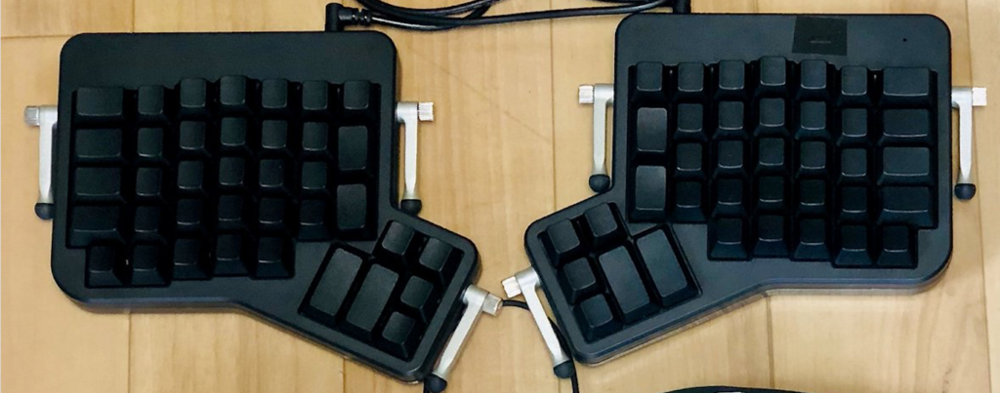
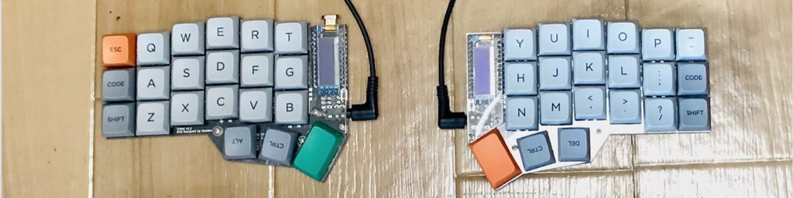
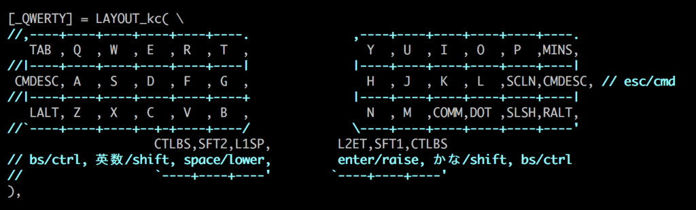
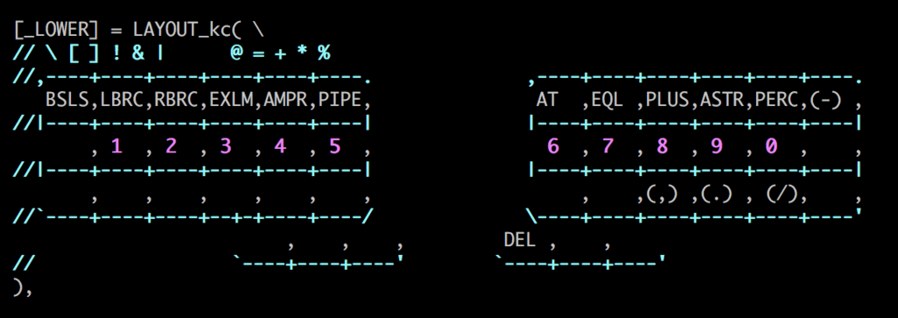
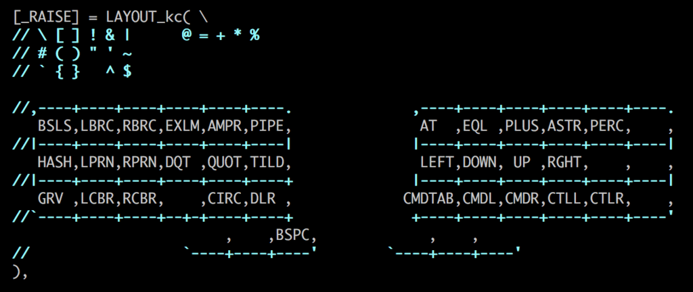

Corne(crkbd)で使う42キーのキーマップを作ってみた
42キーの自作キーボードキットCorne(crkbd)を使い始めて2ヶ月ほど。キーマップがこなれてきたので紹介します。
今までのキーボード
ErgoDox EZ
 ErgoDox EZで入門して、スプリットの良さは実感できたけど、使わないキーが多いのと、親指キーが遠くて指がつらい。。 慣れもあるけど、健康的な打鍵生活のはずが、どうも手が疲れてしまう。。なんか違うな。
Iris
 もうちょっとコンパクトなのが良いと作ったのがIris。
不要キーが少なくなりキーマップがしやすく、親指も近くなり打ちやすくなった。
より丁寧に指の感覚に気をつけて、キーマップを調整していると、最上段のキーを押すのはけっこう辛いのでは？と思ってきた。
この時から最上段を使わない、3段のキーマップを模索する。
もうちょっとコンパクトなのが良いと作ったのがIris。
不要キーが少なくなりキーマップがしやすく、親指も近くなり打ちやすくなった。
より丁寧に指の感覚に気をつけて、キーマップを調整していると、最上段のキーを押すのはけっこう辛いのでは？と思ってきた。
この時から最上段を使わない、3段のキーマップを模索する。
Corne(crkbd)
 そうこうするうちに、目をつけていた3段のキーボードCorne(crkbd)が再販され、それからはCorne中心にキーマップを調整していった。
あと、持ち歩き用にHelix Picoを作ったが、ひとまず制作ラッシュはこれで落ち着く。
目的
- 体に負担の少ない打鍵の仕組みをつくりたい
- 物理的な配列と、論理的な配列の両方を考えていく
物理配列
- 自分で最適化したものを作るのはハードルが高いので、好みに近いものを使わせていただく
- ホームポジションからの移動が少なくて、多くのことができるのが望ましい
- 通常のキーボードだと小指の負担が大きいので、親指にもっと頑張ってもらう
- 実際にどれくらいのキー数を扱えるのかを考えた時、ホームポジションから指ひとつ分動かすくらいが限界なのでは？と考えた。
- 人差し指〜小指までの4本で上下左右に1個分だけ移動と考えると6列3行
- 親指も左右に1個分と考えると3キー（後述のキーマップだとホームポジションを一番内側にしてますが。）
- これにマッチしているのがCorne！
- 余分なキーは思考の妨げになると思い極力少ないキーでいきたい
- Corneを前提に必要な作業が可能な論理配列を模索していく
論理配列
この物理配列だと、通常のキーボードと同じように使うのは当然不可能。 自作キーボードでは、キーの動作をQMK Firmwareなどを使用してカスタマイズできるので、レイヤー機能などを使い、少ないキー数でも同様のことができるようにする。
ユースケース
- 通常のアルファベット、日本語入力、modifierキーの使用
- Enter, Space, BackSpaceはよく使う
- 矢印キーで移動したい
- 物理的に矢印キーは用意できない
- 自分はvimmerなので、別レイヤーでhjklで移動できるようにする
- CMD＋←→やmacのデスクトップ切り替えのショートカットを用意する（必須ではない）
- 数字の入力
- こちらも物理キーは用意できない
- 今までは、最上段の数字キーを使っていたので、計算機型よりは横一列に配置したい
- そこそこ使う機能なので、別レイヤーにし、ホームポジションの段に割り当てる
- 同時に使う確率が高い計算に使う記号や、数字系の記号は同じレイヤーで入力できるようにする
- 記号
- こちらも多くの記号が物理キーには割り当てられないので、別レイヤーに置く
- 矢印系のレイヤーは右のキーボードに集めて左側が空いてるのでそちらにごそっと割り当てる
- 数字レイヤーの記号は重複すると混乱するので、同じ配置とする
- 覚えやすいように、なんとなく意味づけやグルーピングして思い出しやすい配置にする
- 慣れてきたら打鍵効率など考えて配置し直したい
キーマップ
- qmkのMod-Tap Keysを使用しているものは、
tap時のキー/hold時のキーのように補足を書いてあります。 - US配列です。
DEFAULTレイヤー

- modifierキーはなるべく左右対称に配置する
- 混乱を防ぐ
- 複雑なショートカットキー（3個とか、レイヤー下のキーとの組み合わせ）でも左右のキーを組み合わせて入力できるようにする
- 本体
- 通常のQWERTY配列
- 本体の外側のキー
- 左側
- TAB
- tap:ESC / hold:CMD
- option
- 右側
- -（マイナス）
- tap:ESC / hold:CMD
- option
- 左側
- 親指部分
- 親指のホームポジション（最も内側）
- よく使うEnter, Space, BackSpaceをこの辺に割り当てる
- 右側
- tap:Enter
- hold:RAISE（記号＋移動レイヤー）
- このレイヤーのSpaceでBackSpace（右親指を押しっぱ→左親指）
- 左側
- tap:Space
- hold:LOWER（数字レイヤー）
- このレイヤーのEnterでDelete（左親指を押しっぱ→右親指）
- 親指のホームポジション+1
- macと同じ感覚で、「かな・英数モード」を切り替える
- 押しっぱなしが多いshiftを小指に任せるのが可哀想なので親指に頑張ってもらう
- 右側
- tap:ひらがな入力モード
- hold:shift
- 左側
- tap:英数入力モード
- hold:shift
- 親指のホームポジション+2
- ここはちょっと遠いので、modifierの中では少しだけ優先度の低いctrlを配置（これは人によりそうだが）
- 両手がキーボードにないとBackSpaceが打てないので、補助的にBackSpaceを配置
- tap:BackSpace
- hold:ctrl
- 親指のホームポジション（最も内側）
- その他
- ファンクションキーは使っていないので載せていない。必要になったらたぶん数字レイヤーに必要なものだけ入れる
- コロンとセミコロンをmacのkarabiner elementsで入れ替えてます。qmkでもできそうだけど。
LOWERレイヤー

- 右側に計算、数字に関連する記号を配置する
= + * % - , . /- カッコつきの
(,)などはDEFAULTレイヤーのものをそのまま引き継ぐ- 混乱をなるべく防ぐため
RAISEレイヤー

- なんとなくグルーピングして記号を配置する
- 一番左側
\ # `- バック系と、#はコメントやmarkdownで左に置くイメージ
- カッコ
- セットで列にして置きたかった
! & |- 論理演算子グループ
“ ‘ ~- クオート系と日本語でよく使うので〜は使いやすい位置に
^ $- 先頭、行末
- 一番左側
- 移動系
- hjkjをvim同様に配置
- CMD+TAB、CMD+←→、ctrl+←→を配置
実際のキーマップファイル
- qmk_firmware/keymap.c at yfuku · yfuku/qmk_firmware
- Iris的な書き方と混ぜてしまったりと、ごちゃついているので整理したい・・
今後
- ひとまずこちらのキーマップで仕事に支障なく使えているので満足しているが、まだまだ変わっていくと思う
- 試行錯誤しながら感覚的に作っていったので、まだまだ論理的でない部分が多く感じる
- qmkの機能をあまりわかってないので試して使えそうなのを取り入れていきたい
- キーロガーなど使って、自分の癖を知りたい。記号部分なども最適化したい。
- 打鍵の負荷を減らしたいのでEucalyn配列なども試してみたい
- vimmerなのでhjkl問題をどうするかと、配列変更にともなって全体的に調整が必要なので二の足を踏んでいる。。